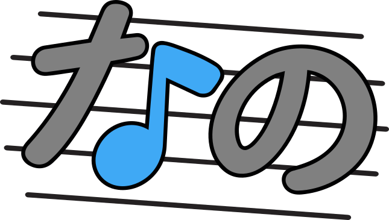

Blood on Blood
Two-stage Roformer separation with Ensemble baseline, autonomous outro gang-vocal repairs, and human-auditioned Frazer chorus harmony splice.
- Instrumental
- Vocals (Lead)
- Vocals (Backing)

NANOdaw VocalSep Pro MultitracksSelect a song to open its isolated instrumental, lead vocal, and backing harmony stems directly in the NANOdaw browser multitrack mixer.
Two-stage Roformer separation with Ensemble baseline, autonomous outro gang-vocal repairs, and human-auditioned Frazer chorus harmony splice.
Gabox V2 lead/backing vocal demix with crossfade-patched high-register climax repair over BS-Roformer Viperx-1297 instrumental.
Full studio multitrack comparing Lead vs. Harmony separation alongside chest vs. upper-register vocal splits.